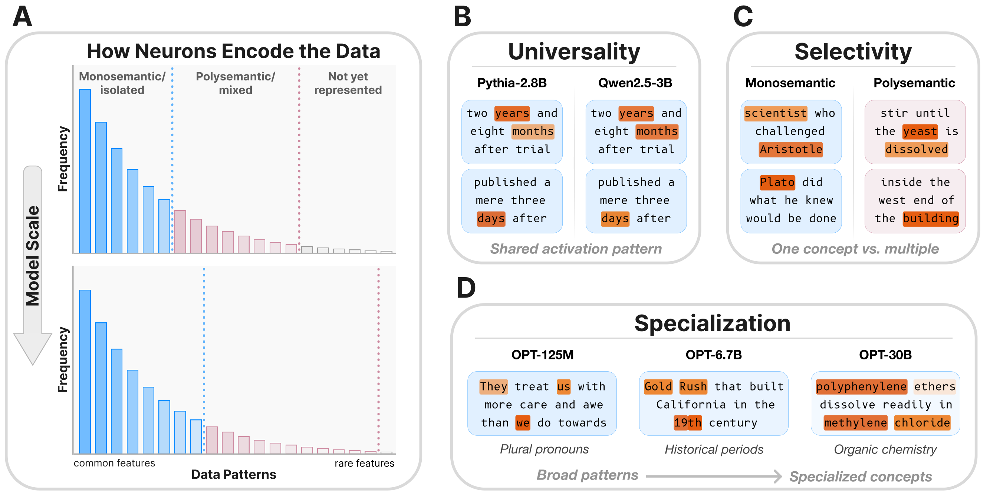

Neuron Populations Exhibit Divergent Selectivity with Scale
1UC Berkeley • 2TTIC

Abstract
We investigate whether neuron populations within neural networks evolve predictably with scale, extending scaling laws beyond macroscopic observables such as loss. To probe this question, we study Rosetta Neurons, a previously characterized class of neurons whose activation patterns are similar across independently trained models. In separate analyses of language models up to 30B parameters and vision models up to 5B parameters, we observe that the population of Rosetta Neurons follows a sublinear power law in model size, growing in absolute number but occupying a shrinking fraction of the total neuron count. We further observe a Neuron Polarization Effect: Rosetta Neurons become more selective and increasingly monosemantic with scale, separating from a growing non-Rosetta population that remains less selective. An analytical model balancing feature utility against limited neuron capacity explains the sublinear power-law scaling and this polarization effect. Finally, we find that Rosetta Neurons become more domain-specialized with scale and illustrate their selectivity through a targeted data-filtering case study for continued pretraining. Our results point to a scaling law for interpretable, shared neuron-level structure, linking model size to systematic changes in neuron universality, selectivity, and specialization.
Rosetta Neuron Visualizations
Each panel visualizes an example Rosetta Neuron shared across independently trained models, along with representative top-activating inputs. These examples provide a qualitative view of the broader phenomenon studied in our paper: Rosetta Neurons offer a scalable way to identify shared, interpretable structure within large models, revealing a recurring neuron-level population that evolves predictably with scale.
Click any panel to enlarge.
Acknowledgments
We thank members of Berkeley AI Research and the Redwood Center for Theoretical Neuroscience for helpful discussions. We are particularly grateful to Mason Kamb, Phillip Isola, David Bau, Yizhou Liu, Sophie Wang, Grace Luo, Stephanie Fu, Jasmine Shone, Tamar Rott Shaham, and Tyler Bonnen for their thoughtful feedback. YB, AE, and YG jointly advised this work. YB is a visiting scholar at UC Berkeley and member of the Simons Collaboration on the Physics of Learning & Neural Computation. AD is supported by the US Department of Energy Computational Science Graduate Fellowship. Additional support came from ONR MURI, NSF IIS-2403305, and the Google-BAIR Commons Program.
BibTeX
@article{dravid2026neuron,
title = {Neuron Populations Exhibit Divergent Selectivity with Scale},
author = {Dravid, Amil and Bahri, Yasaman and
Efros, Alexei A. and Gandelsman, Yossi},
journal = {arXiv preprint},
year = {2026}
}